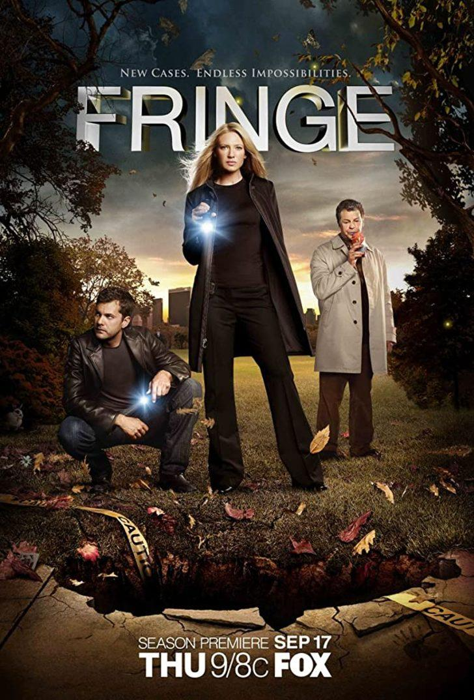
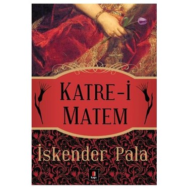

Sevil KILIÇ
İlgi Alanlarım
- Hobilerim
- Puzzle
- El işi sanatları
- Doğa fotoğrafları çekme
- Sevdiğim Diziler
- Fringe

- Sevdiğim Kitaplar
- Katre-i Matem

- Beyoğlu Rapsodisi
- Kardeşimin Hikayesi
Puzzle yapmak ve el işi sanatlarıyla uğraşmak yapmak hoşlandığım şeylerin başında gelir.
- Puzzle
- El işi sanatları
- Doğa fotoğrafları çekme